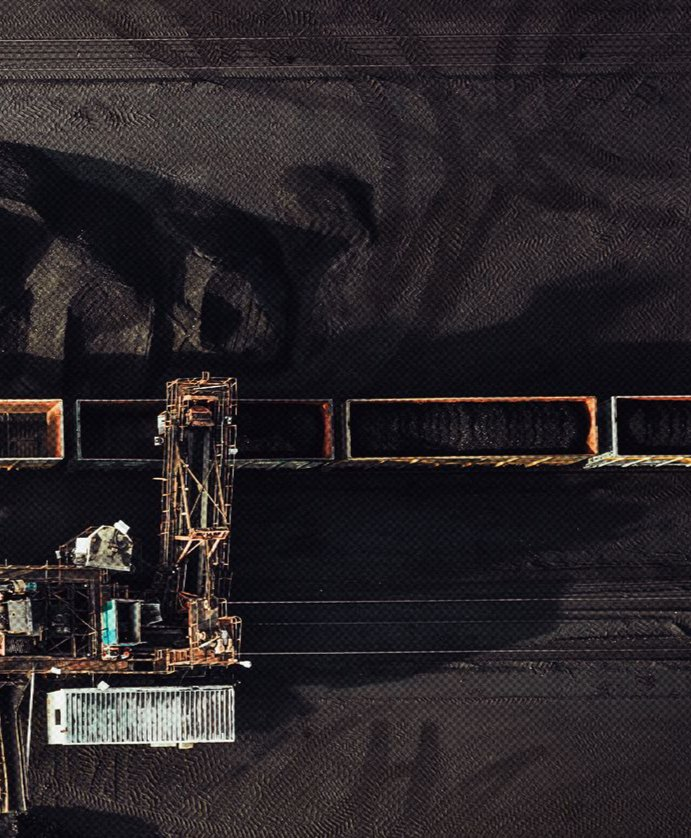

{{ L.eyebrow }}
{{ L.h1a }}
{{ L.h1b }}
{{ L.h1c }}
{{ L.lede }}
{{ L.cta1 }}
→
{{ L.cta2 }}
{{ m }}
// {{ L.introKicker }}
{{ L.introTitle }}
{{ st.n }}
{{ st.l }}
{{ L.introLead }}
{{ L.introBody }}
{{ v.title }}
{{ v.desc }}
{{ L.exploreTitle }}
{{ L.exploreSub }}
// {{ s.kicker }}
→
{{ s.title }}
{{ s.summary }}
{{ it }}

// {{ L.ctaKicker }}
{{ L.ctaTitle }}
{{ L.ctaBtn }}
→